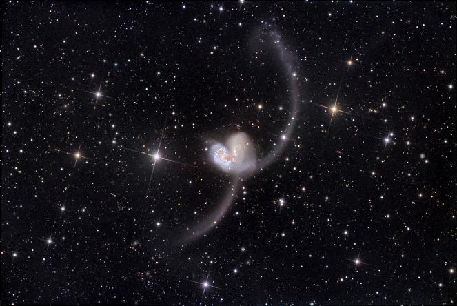

[ home | research
| personal | resume
| links ]
Crash Snapshots
The Antennae
More information

The Cartwheel Galaxy
The unusual shape of the Cartwheel Galaxy is likely
due to a collision with one of the smaller galaxies
on the lower left several hundred million years ago.
More information
The Tadpole galaxy
More information
The Mice
More information

Arp 272
More information
NGC 3256
More information
Arp 87
More information
NGC 2207 and IC 2163
More information
NGC 520
More information
M 51
More information
Distant ultraluminous infrared galaxies

The Toomre sequence
In 1977 Alar Toomre selected 11 pairs of interacting
galaxies to represent sequential stages of a galaxy
merger. Optical images of these galaxies as obtained
by the Hubble Space Telescope can be found
here.
Back to the Galaxy Crash Course page